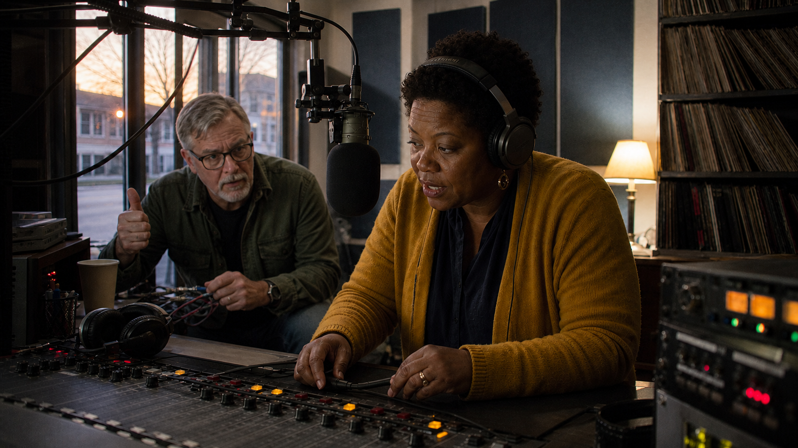
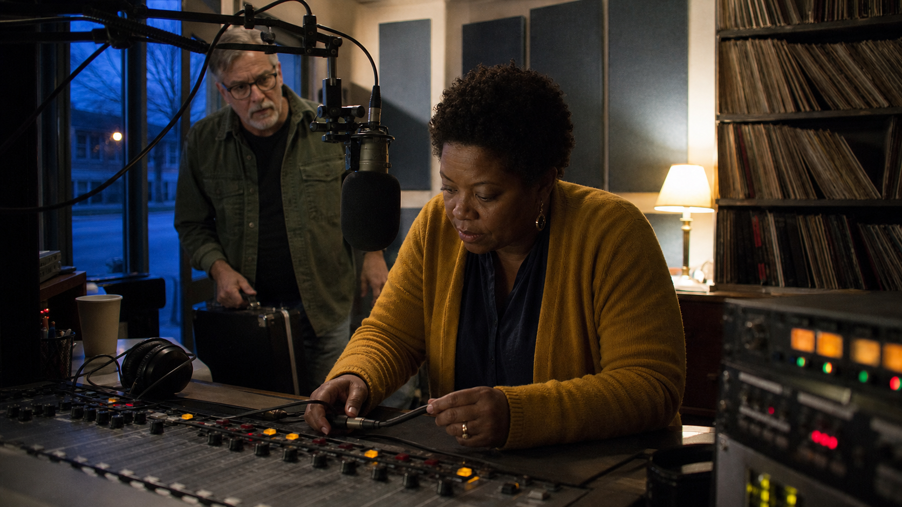

Select an element to reveal how it operates in this scene.
Activity 2
Scene to Story Lab
Move from the smallest recorded unit to a documentary story: shot → sequence → scene → story. Examine what makes a scene do story work, then plan scenes for your own short documentary.
Private by design. No login, submission, analytics, or numerical score. Your writing stays in this browser unless you copy, download, or print it. Do not enter private contact details.

Part 1 · See the scale
From a shot to a story
Choose each level to see what it contributes. Bigger units contain smaller ones, but they add meaning—not simply duration.
Part 2 · Read a scene
A scene has dramatic movement
A scene is more than a location or a set of attractive shots. Reveal the five elements in the example below.

Part 3 · Build the story
Scenes create a meaningful progression
Explore the four scenes, then use the arrow buttons to test how changing their order changes the story proposal.
Part 4 · Apply it
Plan scenes for your film
Propose three filmable scenes. Treat each as a present-time event that could change what the audience understands or feels.
Part 5 · Reflect and export
Your scene-to-story plan
Review the whole plan below. You can return to any section and revise without starting over.
Your saved work
Reset permanently deletes this activity’s saved writing and choices from this browser.